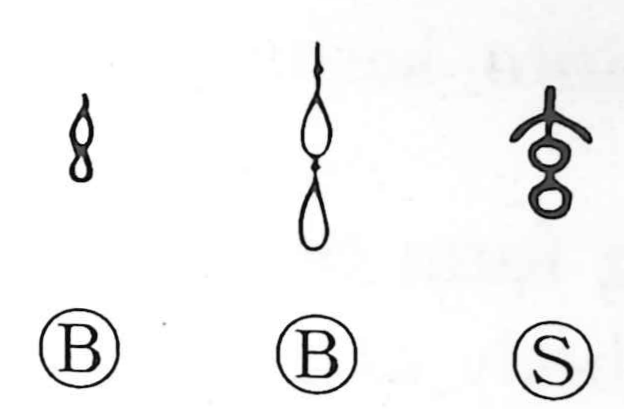

玄

Kun: kuro | On: gen
mysterious ・ profound ・ deep ・ black
Explanation
Shirakawa sees 玄 as picturing the twisted ends of a thread. When the white, tied-off tips are plunged into a dye pot and repeatedly soaked, the thread darkens to a black with a reddish cast, a color that evokes depth and mystery. Classical sources say three immersions yield a pale red (縷), seven a full black (緇); 玄 sits just short of that, a red-leaning black—like a sixth soaking. From this chromatic nuance grew the aesthetic sense of yugen, so 玄 came to mean “deep, profound, calm.” The knot at the very tip preserves a trace of the original white, called 素, which is why 素 itself names “white.”